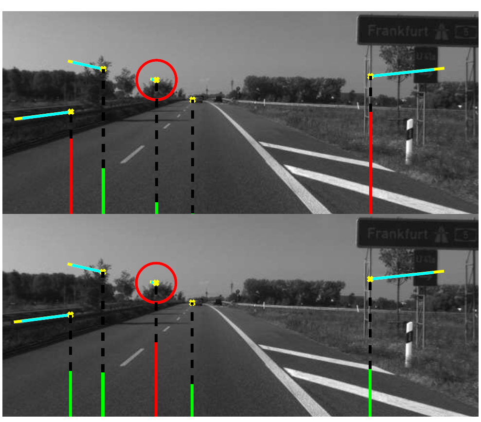
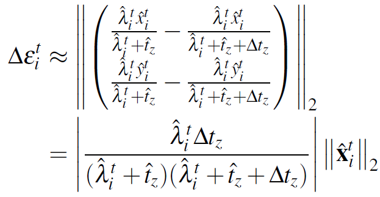
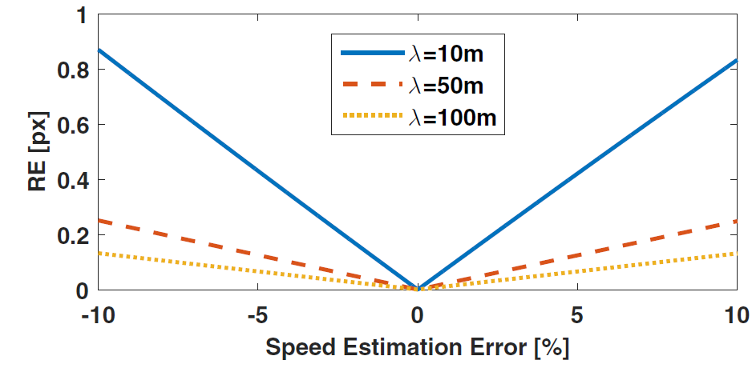
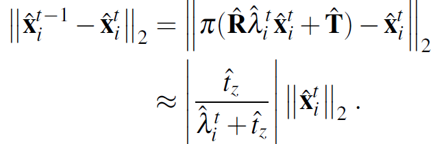
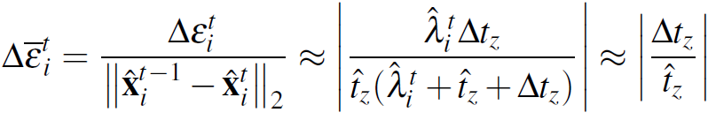
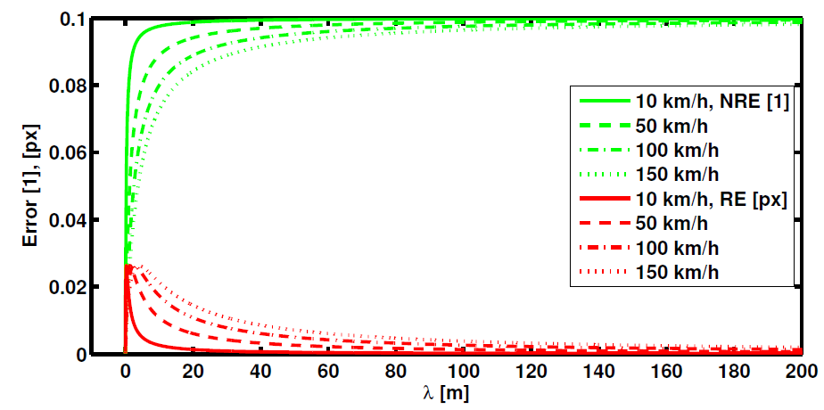
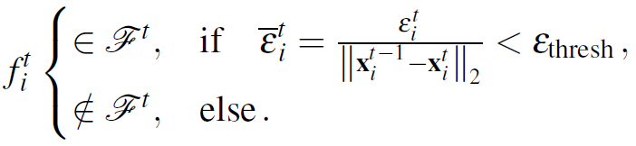
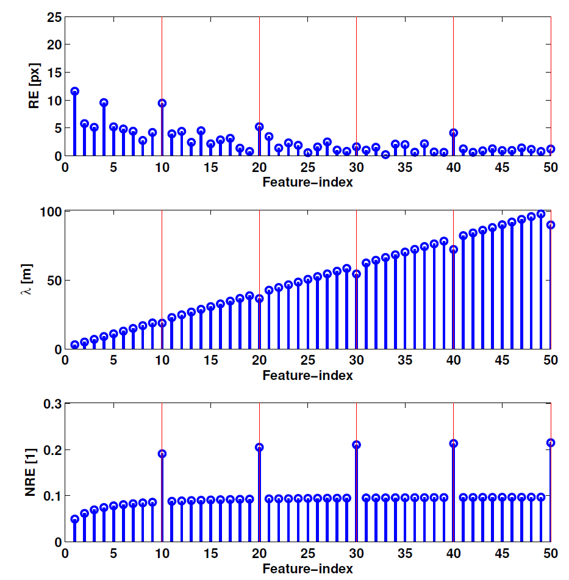
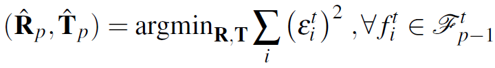
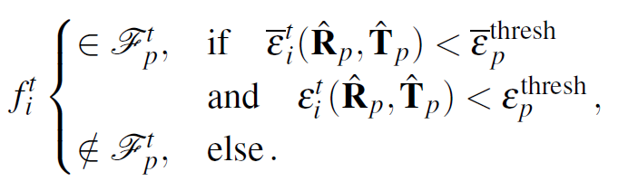

Outliers Removal in Visual Odometry for High-speed Automotive Applications
This page will discuss the method to remove outlier of optical flow tracking before camera pose optimization. It's a little bit tricky that not all the "well-matched" visual features tracked by optical flow should be used for pose estimation.
The main idea comes from the paper, "How to Distinguish Inliers from Outliers in Visual Odometry for High-speed Automotive Applications, Martin Buczko and Volker Willert".
Their system has ranked first place (Jan 11th 2016) amongst camera-based algorithms in the KITTI benchmark. Furthermore, at speeds higher than 70 km/h it achieves better results than the best camera and laser-scanner based methods in the benchmark.
Problem Description
The essential part of any visual odometry system is the detection of outliers. Therefor, a broad variety of methods has been introduced:
purely flow-based approaches, which assume the flow follows patterns which are induced by the ego motion of the car.
motion model-based approaches, which explicitly constrain the flow using a certain motion model.
The majority of existing systems use reprojection error-based approaches, such as RANSAC.
The RANSAC is based on the principle:
In each iteration, a minimum number of random samples is taken from the correspondences to create a motion hypothesis. Then, a score for each feature is calculated that describes whether it supports the hypothesis. If the motion estimate reaches a predefined support of the features, the non-supporting features are marked as outliers. Otherwise, a new random sample is drawn and the next iteration starts.
In order to define the support of a feature in this RANSAC-scheme, we have to calculate the reprojection error for each feature and compare it to a constant threshold.
However, only reprojection error is not enough as figure below,

Figure description,
Flow with cyan color comes from the ego-motion compensation. (motion prediction + feature reprojection)
Flow with yellow color comes from the real optical flow tracking.
Red circle means error-free measurement (cyan color and yellow color are totally matched).
In the upper image, the green(inlier) and red bar(outlier) comes from classical reprojection error.
In the lower image, the green(inlier) and red bar(outlier) comes from proposed normalized reprojection error.
From the upper image, the true outlier with red circle has an additive error in the depth estimate. The reprojection error shows a low error for the distant outlier, thus selected as an inlier (green bar) but high values for close/near true inliers. Hence, the reprojection error has both false positive and false negative judge.
From the lower image, all the inliers come from normalized reprojection error have almost the same offset/height/length of green bar. It's easier to set the threshold and distinguish the inlier and outlier. At least, the normalized reprojection error seems to be not affected by the feature distance.
Problem Analysis
Before introducing the normalized reprojection, let's see and analyze why the reprojection error will have false negative and false positive outliers.
In order to find a proper threshold on the reprojection error to reject outliers, we have to define some motion error range  on the optimal estimate
on the optimal estimate to find the reprojection error range given the motion error range and error-free measurements. This results in the sensitivity of the reprojection error
to find the reprojection error range given the motion error range and error-free measurements. This results in the sensitivity of the reprojection error  .
.
Now, considering high-speed scenarios, we can assume very small rotations and much larger longitudinal than horizontal and vertical movements (lateral coordinate X, transversal coordinate Y and forward coordinate Z),
high-speed approximation,

high-speed approximation,

Under highspeed for an error-prone motion hypothesis  , we've finally got the reprojection error sensitivity below. Here the
, we've finally got the reprojection error sensitivity below. Here the is i-th feature depth at time t.
is i-th feature depth at time t.

The sensitivity of the reprojection error is scaled by the absolute value of the image coordinate  and damped by the feature’s depth
and damped by the feature’s depth  .
.
This means, an incorrect motion hypothesis
with a fixed error range  produces a variant sensitivity
produces a variant sensitivity  dependent on the feature’s position.
dependent on the feature’s position.
To receive a first impression on the consequences for the sensitivity of the reprojection error in such driving scenarios the figure below shows the dependency of the reprojection error  for an increase in longitudinal translation error estimates
for varying feature depth
for an increase in longitudinal translation error estimates
for varying feature depth  . It clearly illustrates, the RE is combined with the error of feature depth and
longitudinal translation(estimated pose).
. It clearly illustrates, the RE is combined with the error of feature depth and
longitudinal translation(estimated pose).
the reprojection error (RE) linearly increases with increasing translation error
the sensitivity of the reprojection error (the slope of the lines) decreases with increasing distance of the features

Thus, methods that base the outlier removal on a constant threshold (e.g. threshold=0.2 pixel) on the reprojection error may remove close/near features(false positive) and miss the distance/far features(false negative) quite often.
In addition, the classical RE be interfered by the feature distance and difficult to tell the translation error. As close features with high absolute values of their correspondences are lost during the outlier rejection process, the sensitivity of the reprojection error against forward translation gets lost. In turn, this results in worse estimates of the translation because the signal-to-resolution ratio is getting small and cannot be exploited anymore.
To conclude, a reasonable threshold to judge the feature’s quality can not be a constant value but must incorporate the depth as much as the length of the image coordinate in order to make a meaningful statement on the feature’s quality.
Proposed Method and Benefit
To reduce the variance of the reprojection error on the feature position we can either apply a position adaptive threshold(create manual rules as feature engineering on figure above) for outlier removal or normalize the reprojection
error for coordinate scaling and depth damping.
Since the resolution of the measured depth values decreases with distance and depth measurements are error-prone in general, we do not want to incorporate them to compensate the depth damping of the reprojection error.
Instead, we use the dependency of the absolute value of the optical flow on the depth and use the optical flow measurements to normalize the reprojection error.
Let's use the highway assumption again. The error-free (visual match perfectly) absolute value (position difference) of a feature’s optical flow induced by an error-free straight forward motion  would be,
would be,

Using the absolute value of the current flow as a normalization to the sensitivity of the reprojection error, we get

Here, the second approximation assumes the depth being much larger than the longitudinal motion  .
.
Now, the normalized reprojection error is not scaled by the absolute value of the image coordinate anymore and almost not dependent on the distance of long distant features as shown in figure below,

The image above is the comparison between sensitivity of reprojection error (RE) and sensitivity of normalized reprojection error (NRE).
The reprojection error (see red) is dampened by distant and slow features and a fixed threshold outlier criterion tends to lose close and fast features. (e.g. threshold=0.02, near/close feature with same velocity or fast feature with same distance will be removed.)
By contrast, the normalized reprojection error (see green) amplifies distant and slow features up to some saturation, thus a fixed threshold outlier criterion tends to keep close and fast features. (e.g. threshold=0.08, the far feature with same velocity or slow feature with same distance will be removed).
Thus, using a threshold  on the normalized reprojection error to mark each feature
on the normalized reprojection error to mark each feature  as a member of the current feature set, we apply,
as a member of the current feature set, we apply,

This criterion turns out to be very suitable for outlier removal, especially in high-speed scenarios, because it is almost invariant to the features’ 3D position.
The figure below shows a simulation comparison between the reprojection error and the normalized reprojection error for some error prone depth estimates and a forward motion  of 100km/h. The reprojection error does not allow a separation between inliers and outliers because
of 100km/h. The reprojection error does not allow a separation between inliers and outliers because  scales with the absolute value of the coordinate of the features. By contrast,
scales with the absolute value of the coordinate of the features. By contrast,  leads to a clear separability.
leads to a clear separability.

This simulation assumes depths start at 3m for feature 1 and end at 100m for feature 50. Every tenth feature has an error of 10% in the estimated depth (the red line marks the ground truth outlier).
Benefit
The classical RE can't find these outlier with constant threshold. However, the NRE could tell the outlier with constant threshold.
How to apply this outlier removal method to pose optimization problem
To realize an iterative optimization scheme that carefully alternates between incremental outlier rejection and pose change refinement, we need a suitable set of a reasonable number of features to start with. A suitable feature has unambiguous temporal as well as stereoscopic correspondence measurements to get as much reliable optical flow and depth estimates as possible.
Next, we iterate and alternating between a) pose refinement keeping the current inlier set  fixed and b) outlier removal keeping the current pose
fixed and b) outlier removal keeping the current pose  fixed.
fixed.
step a, Pose refinement

step b, apply robust Outlier Criterion for Camera-based Odometry,

go back to step a, until max iteration or feature number don't change. In the end, we terminate our robust pose estimation scheme and perform one last refining optimization run with the remaining features.